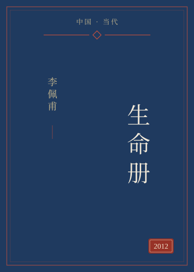
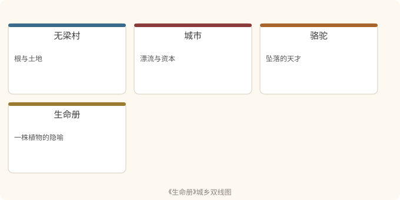

生命册
一、基本信息
| 作者 | 李佩甫 |
|---|---|
| 成书/出版 | 第九届茅盾文学奖获奖作品（中国作家网官方名单 C012：作家出版社；出版具体日期待核） 历届茅盾文学奖获奖作品一览（中国作家网）（官方文学机构） |
| 国别/地区 | 中国 |
| 时代 | 现当代 · 当代 |
| 体裁 | 长篇小说 |
| 语言 | 汉语（白话） |

《生命册》城乡双线图（主题·结构图）
二、创作背景
中国作家网官方名单（C012）：第九届（2011—2014）茅盾文学奖获奖作品《生命册》李佩甫（作家出版社）。
题材：从乡村（平原）到城市的个人漂流史（通说待核）。
三、内容脉络
'我'（吴志鹏）由乡村教师进城：电子时代的第一代 '骆驼' 生意线（通说待核）。
乡村线：无梁村的多个人物命运（通说待核）。
四、主要人物表
| 人物 | 身份 | 说明 |
|---|---|---|
| 吴志鹏（我） | 进城者 | 双线叙述（通说待核） |
| 骆驼 | 生意伙伴 | 资本年代的坠落（通说待核） |
五、主题与艺术特点
- 城乡之间的'根'与'漂'（通说）。
- 平原生态：土地与人的隐喻（通说待核）。
- 资本时代的道德叙述（通说待核）。
六、影响与评论
- 中国作家网官方名单：第九届茅盾文学奖获奖作品、作家出版社（C012）。
历届茅盾文学奖获奖作品一览（中国作家网）（官方文学机构） - 茅奖序列中的'平原书写'：与《羊的门》构成谱系（通说待核）。
历届茅盾文学奖获奖作品一览（中国作家网）（官方文学机构）
七、阅读建议
难点
- 双线切换（城市/乡村）。
- 中原方言。
- 《生命册》（作家出版社，C012 官方名单口径）。
对照《平凡的世界》：进城叙事的两代。
八、待核实
- 吴志鹏/骆驼人名核对。
- 2012年3月作家出版社初版核对。
- 《羊的门》《城的灯》三部曲总名待核。
本页主要来源
李佩甫的其他收录作品：生命册